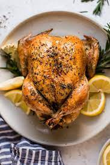

Welcome to our workshop
Here is a sample of the food we prepare in COOK WITH US.

We've got the secret to cooking a burger that's crispy on the outside, yet juicy on the inside.
1/4 pound freshly ground brisket (if you can't find brisket, substitute ground chuck)
2 tablespoons unsalted butter, plus more if needed
4 potato rolls, preferably Martin's brand
2 tablespoons vegetable oil
2. Do not overmix, or your patties will be tough.
3. Divide into six portions and form patties, without pressing too hard.
4. They should be uniform in thickness. Smooth out any cracks using your fingers.
5. Make these right before you grill them, so they stay at room temperature.
6. Preheat your grill, grill pan or cast-iron skillet to high heat and add burger patties.
7. If using a grill, cover with the lid.
8. Cook until the crust that forms on the bottom of the burger releases it from the pan or grate — about 2 minutes.
9. Gently test, but don't flip it until it gets to this point.
10. When burgers lift up easily, flip, add two slices of cheese to each, close lid if using a grill, and cook on the other side for another 2-3 minutes for medium to medium rare.
Ingredients:
3/4 pound freshly ground sirloin1/4 pound freshly ground brisket (if you can't find brisket, substitute ground chuck)
2 tablespoons unsalted butter, plus more if needed
4 potato rolls, preferably Martin's brand
2 tablespoons vegetable oil
How to do it:
1. In a large bowl, mix ground beef, onion powder, salt and pepper until just combined.2. Do not overmix, or your patties will be tough.
3. Divide into six portions and form patties, without pressing too hard.
4. They should be uniform in thickness. Smooth out any cracks using your fingers.
5. Make these right before you grill them, so they stay at room temperature.
6. Preheat your grill, grill pan or cast-iron skillet to high heat and add burger patties.
7. If using a grill, cover with the lid.
8. Cook until the crust that forms on the bottom of the burger releases it from the pan or grate — about 2 minutes.
9. Gently test, but don't flip it until it gets to this point.
10. When burgers lift up easily, flip, add two slices of cheese to each, close lid if using a grill, and cook on the other side for another 2-3 minutes for medium to medium rare.

This delicious Greek salad topped with Greek marinaded chicken is the best for meal prepped
lunches.
1 8- ounce Greek Marinated Chicken Breast
2 cups Mediterranean Tomato Salad or sliced tomatoes
cup sliced Persian or hothouse cucumber
1/4 cup kalamata olives
2. Top with the sliced chicken, tomato salad, cucumber, olives, and feta cheese.
3. To make the dressing, add the olive oil, red wine vinegar, garlic, oregano, sugar and salt and pepper to a small canning jar.
4. Top with the lid and shake well until blended and emulsified.
5. Season with more sugar and salt and pepper to taste.
6. Drizzle the dressing over the salad and toss to taste.
Ingredients:
6 cups chopped lettuce (such as iceberg or romaine)1 8- ounce Greek Marinated Chicken Breast
2 cups Mediterranean Tomato Salad or sliced tomatoes
cup sliced Persian or hothouse cucumber
1/4 cup kalamata olives
How to do it:
1. Add the lettuce to a large serving bowl or two individual salad bowls.2. Top with the sliced chicken, tomato salad, cucumber, olives, and feta cheese.
3. To make the dressing, add the olive oil, red wine vinegar, garlic, oregano, sugar and salt and pepper to a small canning jar.
4. Top with the lid and shake well until blended and emulsified.
5. Season with more sugar and salt and pepper to taste.
6. Drizzle the dressing over the salad and toss to taste.

Ingredients:
875 g baking potatoes such as Russet1/2 ActiFry spoon paprika
2 ActiFry spoons vegetable oil
1/2 tsp salt (approx.)
How to do it:
1. Use a clean tea towel to thoroughly dry the fries.2. Place the chips in a bowl.
3. Toss gently with the paprika and half the oil to evenly coat chips evenly.
4. Transfer to the ActiFry pan; drizzle evenly with the remaining oil.
5. Cook for 30 to 40 minutes or until the chips are crisp, golden and cooked through (the cooking time will vary depending on the thickness of the chips and the variety of potato used).
6. Season with salt (adjust to taste).

This is delicious – vibrant with spices,
with a sweet note from the sugar and raisins. Perfect with our Bobotie recipe
50g butter
1 heaped tbsp caster sugar
1 tsp ground cinnamon or 1⁄2 cinnamon sticK
6 cardamom pods , shelled and seeds crushed
just under 1 tsp ground turmeric
5 tbsp raisin
2. Stir, cover and leave to simmer for 6 mins. Take off the heat and leave, still covered, for 5 mins. Fluff up and tip into a warm bowl to serve.
Ingredients:
350g basmati rice50g butter
1 heaped tbsp caster sugar
1 tsp ground cinnamon or 1⁄2 cinnamon sticK
6 cardamom pods , shelled and seeds crushed
just under 1 tsp ground turmeric
5 tbsp raisin
How to do it:
1. Put all the ingredients in a large pan with 1 tsp salt and 500ml water, then heat until boiling and the butter has melted.2. Stir, cover and leave to simmer for 6 mins. Take off the heat and leave, still covered, for 5 mins. Fluff up and tip into a warm bowl to serve.

This Mongolian beef recipe is thinly sliced steak that's seared until crispy, then coated in a
sweet
1/4 cup + 2 teaspoons cornstarch (divided use)
3 tablespoons vegetable oil
1 1/2 teaspoons minced garlic
1 teaspoon minced ginger
2. Place your meat in the freezer about 30 minutes before you plan to use it.
3. You want the meat to sear and not steam, so you’ll need to avoid adding too much meat at once to the pan.
4. I cook my steak in a single layer in batches so that it all ends up browned and delicious.
5. No flank steak on hand? You can also use skirt steak, sirloin or New York strip.
6. If you prefer a spicy dish, you can add up to 1/2 teaspoon of crushed red pepper flakes, or sriracha sauce to taste.
7. While this dish is traditionally served with just beef and green onions, you can add other vegetables to the mix such as broccoli, carrots, mushrooms or bok choy.
Ingredients:
1 1/4 lbs flank steak (thinly sliced)1/4 cup + 2 teaspoons cornstarch (divided use)
3 tablespoons vegetable oil
1 1/2 teaspoons minced garlic
1 teaspoon minced ginger
How to do it:
1. Flank steak is easiest to slice thin when it’s partially frozen.2. Place your meat in the freezer about 30 minutes before you plan to use it.
3. You want the meat to sear and not steam, so you’ll need to avoid adding too much meat at once to the pan.
4. I cook my steak in a single layer in batches so that it all ends up browned and delicious.
5. No flank steak on hand? You can also use skirt steak, sirloin or New York strip.
6. If you prefer a spicy dish, you can add up to 1/2 teaspoon of crushed red pepper flakes, or sriracha sauce to taste.
7. While this dish is traditionally served with just beef and green onions, you can add other vegetables to the mix such as broccoli, carrots, mushrooms or bok choy.

These triple chocolate cookies are chewy in the middle with deliciously crispy edges.
150g unsalted butter, softened
100g light brown soft sugar
75g caster sugar
1 tsp vanilla extract
1 medium free-range egg, beaten
175g plain flour
2 tbsp cocoa powder
1 tsp baking powder
150g smooth milk chocolate, chopped into chunks
150g smooth white chocolate, chopped into chunks
2. Place the dark chocolate in a heatproof bowl over a pan of simmering water (make sure it's not touching) until melted. Leave to cool slightly.
3. Using an electric mixer, whisk together the butter, light brown sugar, caster sugar and vanilla extract until creamy.
4. Whisk in the melted dark chocolate and egg.
5. Stir in the flour, cocoa powder and baking powder, until well combined.
6. Stir in the chocolate chunks. Spoon rounds of the mixture on to the trays and bake for 12 minutes.
Ingredients:
150g smooth dark chocolate, broken up150g unsalted butter, softened
100g light brown soft sugar
75g caster sugar
1 tsp vanilla extract
1 medium free-range egg, beaten
175g plain flour
2 tbsp cocoa powder
1 tsp baking powder
150g smooth milk chocolate, chopped into chunks
150g smooth white chocolate, chopped into chunks
How to do it:
1. Preheat the oven to 180°C/gas mark 4. Line 2 baking trays with baking parchment.2. Place the dark chocolate in a heatproof bowl over a pan of simmering water (make sure it's not touching) until melted. Leave to cool slightly.
3. Using an electric mixer, whisk together the butter, light brown sugar, caster sugar and vanilla extract until creamy.
4. Whisk in the melted dark chocolate and egg.
5. Stir in the flour, cocoa powder and baking powder, until well combined.
6. Stir in the chocolate chunks. Spoon rounds of the mixture on to the trays and bake for 12 minutes.

1/2 onion (chopped in large chunks)
2 cloves garlic (smashed)
1 lemon (halved)
3 sprigs fresh rosemary
2. The combination of rosemary and lemon is wonderful with chicken!
3. Serve this with roasted vegetables or baked sweet potato on the side and use the leftover chicken bones to make a wonderful stock.
4. If you have an air fryer, you might love this Air Fryer Whole Chicken.
Ingredients:
1 3 lb chicken, washed and dried, fat removed1/2 onion (chopped in large chunks)
2 cloves garlic (smashed)
1 lemon (halved)
3 sprigs fresh rosemary
How to do it:
1. Roasting a whole chicken is pretty simple to do, as long as you have a thermometer you can’t go wrong.2. The combination of rosemary and lemon is wonderful with chicken!
3. Serve this with roasted vegetables or baked sweet potato on the side and use the leftover chicken bones to make a wonderful stock.
4. If you have an air fryer, you might love this Air Fryer Whole Chicken.

Ingredients:
2 large russet potatoes1 Tbsp olive oil
Salt and black pepper to taste
Optional toppings:
2 Tbsp finely grated Parmesan1⁄2 Tbsp smoked paprika
1 Tbsp chopped fresh rosemary
1 clove garlic, minced
1⁄4 cup chopped parsley and the grated zest of 1 lemon
How to do it:
1. Preheat the oven to 400°F.2. Scrub the potatoes with cold water and cut crosswise into 1⁄8" thick slices.
3. Toss with the olive oil and season with salt and pepper.
4. Spread in a single layer on a baking sheet. (To use the optional toppings: Sprinkle with Parmesan, paprika, or rosemary before baking; add the parsley mixture after baking.)
5. Bake until lightly browned and crispy, about 20 minutes.

Ingredients:
2 pounds sweet potatoes3-4 tablespoons extra virgin olive oil
Kosher salt
Optional toppings:
1/4 cup finely chopped fresh cilantro (including tender stems)1 teaspoon of lime zest or lemon zest
2 tablespoons of fresh lime or lemon juice
1/4 cup extra virgin olive oil
Pinch of salt
How to do it:
1. Prepare the grill, prep the sweet potatoes: Prepare your grill for hot, direct heat.2. While the grill is heating up, peel the sweet potatoes and slice lengthwise, or on a diagonal, into 1/4 inch-thick pieces.
3. Coat the sweet potato slices with olive oil and lightly sprinkle with Kosher salt.
4. Make cilantro lime dressing: Combine all of the dressing ingredients into a small bowl.
5. Grill the sweet potatoes: Once the grill is hot, lay the sweet potato pieces down onto the grill grates.
6. Cover the grill and cook until each side gets some grill marks, between 3-6 minutes for each side, depending on how hot your grill is.
7. Toss with dressing: Toss the sweet potatoes in a bowl with the dressing and serve hot.